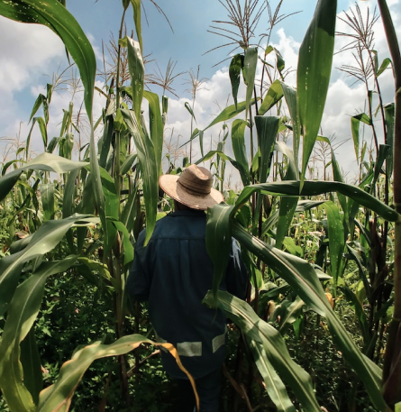

Sobre nosotros
¿Quiénes somos?
Emprendimiento trujillano
En el año 2016, cuatro hermanos se unieron para crear Orgánico Online con el objetivo de brindar una alternativa de alimentos saludables al público trujillano.
Hoy en día ya contamos con una tienda física, en la que podrás encontrar los productos frescos del día. Además, brindamos el servicio de delivery para enviar lo que solicites desde nuestro huerto hacia tu hogar.
Los productos orgánicos son la mejor alternativa para ti y tu familia:
- Se ha demostrado que las frutas y verduras orgánicas son más ricas en nutrientes.
- Estos alimentos te permiten fortalecer el sistema inmunitario, mejora tu la calidad del sueño y reduce las posibilidades de desarrollar enfermedades.
- No dañan a los ecosistemas, pues no utilizan variedades transgénicas, ni se permite la irradiación de semillas.

Los mejores profesionales
Nuestro equipo

Ada Meléndez
CEO

George Douffe
Marketing
Janet Alvaro
Product Owner
Diego Meléndez
Sostenibilidad
¿Qué ofrecemos?
Productos y Servicios
Lo que dicen de nosotros
Testimonios

Eduardo Infante
Me encanta la calidad de los productos. ¡Y la entrega es muy puntual!
Lorena Hurtado
Mi salud ha mejorado muchísimo desde que compro con Orgánico
Fresia Ríos
Son muy amables, siempre dispuestos a ayudar y resolver dudas